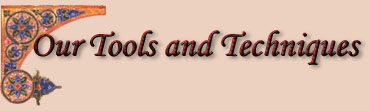
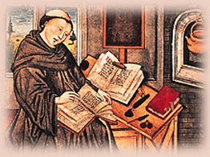

 Each brother at work in our scriptorium has his task-the scribe to carefully copy each word from the old book to the new, the illuminator to decorate the pages with paints and metals so they seem to glow with light. The brothers use many materials in their work. Click on the links on the left to learn more. |
 |